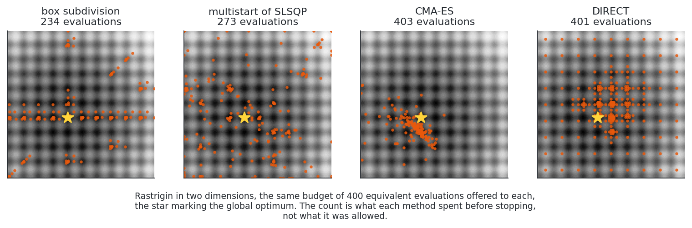
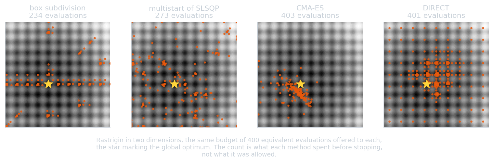

Annex B: the baselines#
The enumeration of the boxes measures the exploration performed by the master but
is not an alternative a practitioner would use. The comparison therefore includes
methods that address bound-constrained multimodal nonlinear problems, one for
each of the main families of the class: a restarted local solver, a stochastic
search and a deterministic partitioning method, complemented by Bayesian
optimization. They are run by benchmarks/baselines.py.


Figure B.1. Points evaluated on the Rastrigin function by the box subdivision, the multistart, CMA-ES and DIRECT.
The sampling patterns of Figure B.1 reflect the methods: the box subdivision concentrates its evaluations in the boxes selected by the master, the multistart distributes local solutions over the whole space, CMA-ES contracts a search distribution onto one basin, and DIRECT refines a lattice in the promising regions.
Multistart of a local solver#
Principle. \(N\) starting points are drawn in the design space, a local solver is run from each of them, and the best result is retained. The method is the reference of the class and the basis of the multi-level single-linkage methods (Rinnooy Kan and Timmer, 1987), which select the starting points worth a local solution. It converges to the global optimum with probability one as the number of starts tends to infinity, which gives no indication for a finite budget.
Information used. The starting points are independent, so that a local solution does not use the results of the previous ones. In the box subdivision, by contrast, the master selects the next box from the cuts of all boxes already solved.
Implementation. GEMSEO’s MultiStart with \(50\) starting points from its
default design of experiments and SLSQP (Kraft, 1988) as local solver. SLSQP is
also the default solver of the box-subdivision sub-problems and was used for
them in the comparison, so that the comparison concerns the choice of the
starting regions rather than their exploitation.
OptimizationLibraryFactory().execute(
problem,
algo_name="MultiStart",
n_start=50,
opt_algo_settings={}, # MultiStart apportions its own budget
doe_algo_settings={"seed": seed},
max_iter=10000, # the counter stops the run, not this
)
Warning
opt_algo_settings must not contain max_iter: MultiStart distributes its
budget over the starts, and a max_iter in these settings makes it return inf
after zero evaluations while reporting success. The benchmark checks that every
method performs at least one evaluation and returns a finite value.
CMA-ES#
Principle. The covariance matrix adaptation evolution strategy (Hansen and Ostermeier, 2001) samples a population from a multivariate normal distribution \(\mathcal{N}(m, \sigma^2 C)\), ranks it, and updates the distribution towards the better half: the mean \(m\) becomes a weighted average of the selected points, the covariance \(C\) accumulates the successful search directions, and the step size \(\sigma\) is adapted from the length of the evolution path of the mean. After a few generations the distribution is aligned with the local valley structure, as shown in the third panel of Figure B.1.
Information used. Second-order information learned from the ranks only, without gradient, which makes the method invariant to increasing transformations of the objective. It is the best baseline on a landscape whose ripple covers a single broad basin: on Ackley in five dimensions it reaches the optimum from all starting points, unlike the box subdivision.
Implementation. The cma package, from the same starting point as the other
methods, with an initial standard deviation of a quarter of the range,
\(\sigma_0 = (u - l)/4\), the bounds as box constraints, and the budget enforced
exactly by its maxfevals option.
DIRECT#
Principle. DIRECT, for DIviding RECTangles (Jones, Perttunen and Stuckey, 1993), evaluates the centre of the design space and then repeatedly divides hyperrectangles. A rectangle \(j\) with centre value \(f_j\) and size \(d_j\) is potentially optimal if there exists a Lipschitz constant \(\tilde K > 0\) such that
i.e. if it lies on the lower-right convex hull of the points \((d_i, f_i)\). All potentially optimal rectangles are divided along their longest side, which balances a global search (large rectangles) and a local search (rectangles of low value) without choosing a Lipschitz constant. The method converges to the global optimum of a continuous objective in the limit, by density of the samples.
Information used. The geometry of the design space rather than the shape of the objective. The partition is regular and the number of rectangles grows rapidly with the dimension, which explains its good performance in two dimensions and its weaker performance in five.
Implementation. scipy.optimize.direct, which is deterministic and does not
use the starting point, with maxfun and maxiter set to the budget.
EGO#
Efficient global optimization (Jones, Schonlau and Welch, 1998) is used through
egobox (Lafage, 2022), a Rust implementation. A Gaussian process is fitted to
all evaluated points, and the next point maximizes the expected improvement,
which balances the refinement of known basins and the exploration of new
regions; the surrogate model retains the whole history of the run.
Bayesian optimization targets the same situation as the box subdivision: an expensive objective, for which the cost of fitting a surrogate is negligible and a few hundred evaluations make up the whole budget. A comparison at equal numbers of evaluations on analytic problems does not account for the cost of the method itself, which dominates on these problems: a run of \(500\) evaluations takes about two and a half minutes, against three seconds for the box subdivision. For an expensive objective this ratio is reversed; the benchmark does not measure this case.
The budget is enforced exactly by the number of calls, n_doe + max_iters with
batches of one. It is not enforced by the counter because an exception raised in
the objective of the Rust extension results in an opaque panic instead of being
propagated, as for the C extension of DIRECT. The initial design of experiments
has five points per variable and is kept below half the budget, so that the
surrogate model is used for the search.
EGO has its own stopping criterion, which is reached in practice: on Styblinski-Tang the expected improvement vanishes once the Gaussian process models the landscape, and the run terminates after \(29\) of the \(500\) allowed evaluations, at a distance of \(0.286\) from the optimum. A cost below the budget therefore indicates termination on this criterion.
Summary of the methods#
multistart |
CMA-ES |
DIRECT |
EGO |
box subdivision |
|
|---|---|---|---|---|---|
gradient |
yes, in each local solution |
no |
no |
no |
yes, in each sub-problem |
stochastic |
starting points |
yes |
no |
initial design |
no |
use of past evaluations |
none |
covariance |
partition |
surrogate over all points |
cuts of all solved boxes |
asymptotic guarantee |
infinitely many starts |
none |
dense sampling |
dense sampling |
not attained, see annex C |
parallelism |
starts |
population |
potentially optimal rectangles |
batch of the acquisition |
boxes of an iteration |
own cost per iteration |
negligible |
negligible |
negligible |
cubic in the number of points |
one mixed-integer solution |
intended use |
few basins, inexpensive objective |
rippled landscapes, no gradient |
low dimension |
expensive objective, small budget |
expensive sub-problem with adjoint |
Table B.1. Characteristics of the compared methods.
EGO and the box subdivision are designed for the same situation, which makes their comparison the most informative, subject to the difference in their own computational cost.
Budget accounting#
A method using gradients cannot be compared with a derivative-free method on the number of objective evaluations alone, since the gradient carries information at a cost. The budget is therefore counted in equivalent evaluations, under two conventions that bound the actual cost:
convention |
cost of a gradient |
corresponding case |
|---|---|---|
adjoint |
\(1\) evaluation |
an adjoint is available, the target case of the method |
finite differences |
\(n\) evaluations |
black-box objective |
Table B.2. Conventions for the cost of a gradient.
CMA-ES and DIRECT do not depend on the convention. The budget is \(500\) equivalent evaluations per design variable, since a fixed budget would favour, in low dimension, the method converging fastest there.
The objective and its gradient are wrapped in a counter that raises an exception as soon as the budget is spent, which stops the run:
class BudgetedCounter(Counter):
def objective(self, x):
if self.cost(self.__dimension, self.__adjoint) >= self.__budget:
raise BudgetExceededError
return super().objective(x)
This works for the methods driven from Python but not for those called from a C
extension, where the exception results in a SystemError. CMA-ES and DIRECT are
therefore limited by their own maxfevals and maxfun options. DIRECT completes
its current iteration and exceeds the budget by about one percent, \(1011\)
evaluations for a budget of \(1000\), which the budget test tolerates.
Methods not included#
Relaxation-based global solvers such as BARON, SCIP, Couenne or Alpine build convex relaxations from the algebraic form of the problem. The sub-problem of an industrial application, a disciplinary optimization or a multidisciplinary analysis, has no such form; these solvers are relevant for polynomial programs but not for the problems considered here.
Basin hopping, particle swarm optimization and simulated annealing are variants of the families already represented, restarted local solvers and stochastic searches, and are not expected to change the comparison.
References#
Rinnooy Kan, A. H. G., & Timmer, G. T. (1987). Stochastic global optimization methods. Part II: Multi level methods. Mathematical Programming, 39(1), 57-78.
Kraft, D. (1988). A software package for sequential quadratic programming. DFVLR-FB 88-28, DLR German Aerospace Center.
Hansen, N., & Ostermeier, A. (2001). Completely derandomized self-adaptation in evolution strategies. Evolutionary Computation, 9(2), 159-195.
Hansen, N. (2016). The CMA evolution strategy: a tutorial. arXiv:1604.00772.
Jones, D. R., Schonlau, M., & Welch, W. J. (1998). Efficient global optimization of expensive black-box functions. Journal of Global Optimization, 13(4), 455-492.
Lafage, R. (2022). egobox, a Rust toolbox for efficient global optimization. Journal of Open Source Software, 7(78), 4737.
Jones, D. R., Perttunen, C. D., & Stuckey, B. E. (1993). Lipschitzian optimization without the Lipschitz constant. Journal of Optimization Theory and Applications, 79(1), 157-181.
Virtanen, P., et al. (2020). SciPy 1.0: fundamental algorithms for scientific computing in Python. Nature Methods, 17, 261-272.
Gallard, F., et al. (2018). GEMS: a Python library for automation of multidisciplinary design optimization process generation. AIAA/ASCE/AHS/ASC Structures, Structural Dynamics, and Materials Conference.